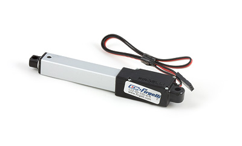

Deluxe Servo
Product Features
This compact servo motor has 180° of travel and is an economical choice for small projects.
Product Description
This is one of the most durable and reliable servos Hitec has ever offered. With its dual iron-oilite bushings, high impact resin gear train and high performance circuitry, the motor features excellent centering and resolution. .
RC servos are hobbyist remote control servos typically used mostly in radio-controlled models, where they provide actuation for various mechanical systems such as the steering of a car, the flaps on a plane, or the rudder of a boat. These servos are not industrial grade and are not recommended for continuous heavy use.
Mega Sail Servo
 Product Features
Product Features
With over 19 kg·cm of torque and 180° of travel, this heavy duty servo is made for strong, slow movements.
Product Description
The Mega sail arm servo has up to 180 degrees of travel and comes with a Heavy Duty 4.5 inch arm, with a dual ball bearing supported output shaft.
RC servos are hobbyist remote control servos typically used mostly in radio-controlled models, where they provide actuation for various mechanical systems such as the steering of a car, the flaps on a plane, or the rudder of a boat. These servos are not industrial grade and are not recommended for continuous heavy use.
Winch Servo
Product Features
This winch servo has 8 revolutions of travel and a drum wheel for applications that require something to be reeled in.
Product Description
The motor winch servo with it's large drum wheel has 8 revolutions of travel. With its dual ball bearing supported output shaft the motor will provide years of reliable service when used in RC applications.
RC servos are hobbyist remote control servos typically used in radio-controlled models, where they provide actuation for various mechanical systems such as the steering of a car, the flaps on a plane, or the rudder of a boat. These servos are not industrial grade and are not recommended for continuous heavy use.
Continuous Rotation Servo
Product Features
For applications where a finite range of motion is not acceptable, use this continuous rotation servo.
Product Description
The motor is a special motor manufactured to operate as a continuous rotation servo. Dual ball bearings on the output shaft ensure long lasting performance. Essentially, it is a gear motor that can be controlled by an RC servo controller. It is not normally used as an actuator, as there is no way of commanding it to move to a particular position, as a standard RC servo does.
Normal servos can be adapted to continuous rotation use, but the problem is that the range of positions that result in the motor being stopped is very narrow. Continuous rotation servos, depending on the position commanded, can go forward or reverse at different speeds. With an adapted continuous rotation servo, the position range for the different speeds is very narrow, making it difficult to produce a specific speed.
The 3202 is superior because it has a very wide "deadband" so you can be sure the motor is stopped when you command it, and the position range for forward or reverse motion is very wide, giving lots of speed resolution.
RC servos are hobbyist remote control servos typically used in radio-controlled models, where they provide actuation for various mechanical systems such as the steering of a car, the flaps on a plane, or the rudder of a boat. These servos are not industrial grade and are not recommended for continuous heavy use.
Deluxe Servo
Product Features
This servo motor has 180° of travel and reasonable torque for its size.
Product Description
Motor updates the very popular Rotation Servo by adding more torque and greater speed. With a top ball bearing, heavy duty, high impact Karbonite™ gears and high performance circuitry, the motor offers lots of torque and features excellent centering and resolution.
RC servos are hobbyist remote control servos typically used in radio-controlled models, where they provide actuation for various mechanical systems such as the steering of a car, the flaps on a plane, or the rudder of a boat. These servos are not industrial grade and are not recommended for continuous heavy use.
Super Torque Servo
Product Features
This servo motor has 180° of travel and has a durable metal gear train.
Product Description
The powerful motor is one of most popular servos. It’s the perfect choice for those projects requiring a durable high torque servo. Featuring Hitec's unique M/P and metal gear train technology, the motor offers one of the strongest gear trains available in any RC servo.
RC servos are hobbyist remote control servos typically used in radio-controlled models, where they provide actuation for various mechanical systems such as the steering of a car, the flaps on a plane, or the rudder of a boat. These servos are not industrial grade and are not recommended for continuous heavy use.
Micro Servo
Product Features
With 175° of travel, this compact servo motor is intended for light applications.
Product Description
The motor is a nice small RC servo ideal for projects where size and weight are important.
RC servos are hobbyist remote control servos typically used in radio-controlled models, where they provide actuation for various mechanical systems such as the steering of a car, the flaps on a plane, or the rudder of a boat. These servos are not industrial grade and are not recommended for continuous heavy use.
SpringRC Micro Servo
Product Features
This tiny servo has 180° of travel and weighs 14g, making it ideal for applications where size and weight matter.
Product Description
This miniature, light (13 grams) RC servo is ideal for projects where size and weight are important. It has metal gears and generates 1.3kg-cm of torque at 4.8V.
SpringRC Micro Servo
Product Features
This servo has 180° of travel and has good torque for its size.
Product Description
The motor is a nice small RC servo with all metal gears, double ball bearing and produces 2.7 kg-cm of torque at 4.8V.
SpringRC Micro Servo
Product Features
The baseline SpringRC model, this affordable servo has 180° of travel and 3.5 kg·cm of torque.
Product Description
The motor is a standard size RC servo with mixed gears, double ball bearing and produces 4.3 kg-cm of torque at 4.8V.
SpringRC High Torque Servo Continuous Rotation
Product Features
This powerful continuous rotation servo has 12 kg·cm of torque, making it a versatile choice.
Product Description
The motor is a standard servo that has been built by SpringRC specifically for continuous rotation (up to 60 RPM at 4.8 V), and it produces a lot of torque (13 kg-cm at 4.8 V). It features two ball bearings on the output shaft for reduced friction, and it offers easy access to the rest-point adjustment potentiometer. Essentially, it is a gear motor that can be controlled by an RC servo controller. It is not normally used as an actuator, as there is no way of commanding it to move to a particular position, as a standard RC servo does.
The motor continuous rotation servo converts RC servo position pulses into continuous rotation speed. The default rest point is 1.5 ms, but this can be adjusted by using a small slotted screwdriver to turn the middle-point positioner (see the Mechanical Drawing). Pulse widths above the rest point result in counterclockwise rotation, with speed increasing as the pulse width increases; pulse widths below the rest point result in clockwise rotation, with speed increasing as the pulse width decreases.
Normal servos can be adapted to continuous rotation use, but the problem is that the range of positions that result in the motor being stopped or operating at less than maximum speed is very narrow. Continuous rotation servos, depending on the position commanded, can go forward or reverse at different speeds. With an adapted continuous rotation servo, the position range for the different speeds is very narrow, making it difficult to produce a specific speed.
These dedicated continuous rotation servos are superior because they have a very wide “deadband” so you can be sure the motor is stopped when you command it, and the position range for forward or reverse motion is very wide, giving lots of speed resolution.
RC Linear Actuator L12-100-100-06-R
 Product Features
Product Features
This servo actuator has a stroke length of 100mm with a peak force of 23N and a peak speed of 12 mm/s.
Product Description
The L12 Linear Actuator is an axial design with a powerful drivetrain and a rectangular cross section for increased rigidity.
The L12 actuator is designed to move push or pull loads along its full stroke length. The speed of travel is determined by the gearing of the actuator and the load or force the actuator is working against at a given point in time. When power is removed, the actuator stops moving and holds its position, unless the applied load exceeds the backdrive force, in which case the actuator will backdrive. Stalling the actuator under power for short periods of time (several seconds) will not damage the actuator.
The linear actuator is an alternative to designing with gears, motors, servos and linkages. The controller sees the actuator as a standard RC servo.
RC Linear Actuator L12-50-100-06-R

Product Features
This servo actuator has a stroke length of 50mm with a peak force of 23N and a peak speed of 12 mm/s.
Product Description
The L12 Linear Actuator is an axial design with a powerful drivetrain and a rectangular cross section for increased rigidity.
The L12 actuator is designed to move push or pull loads along its full stroke length. The speed of travel is determined by the gearing of the actuator and the load or force the actuator is working against at a given point in time. When power is removed, the actuator stops moving and holds its position, unless the applied load exceeds the backdrive force, in which case the actuator will backdrive. Stalling the actuator under power for short periods of time (several seconds) will not damage the actuator.
The linear actuator is an alternative to designing with gears, motors, servos and linkages. The controller sees the actuator as a standard RD servo.
We Provide:
- To be accessible, friendly, and helpful at all times.
- To answer the phone when you call, 24/7/365.
- Reply to your emails and support tickets within 24 hours.
- To provide timely information about new hardware.
- To provide all design documentations.
Please fulfill following request form to get more information!